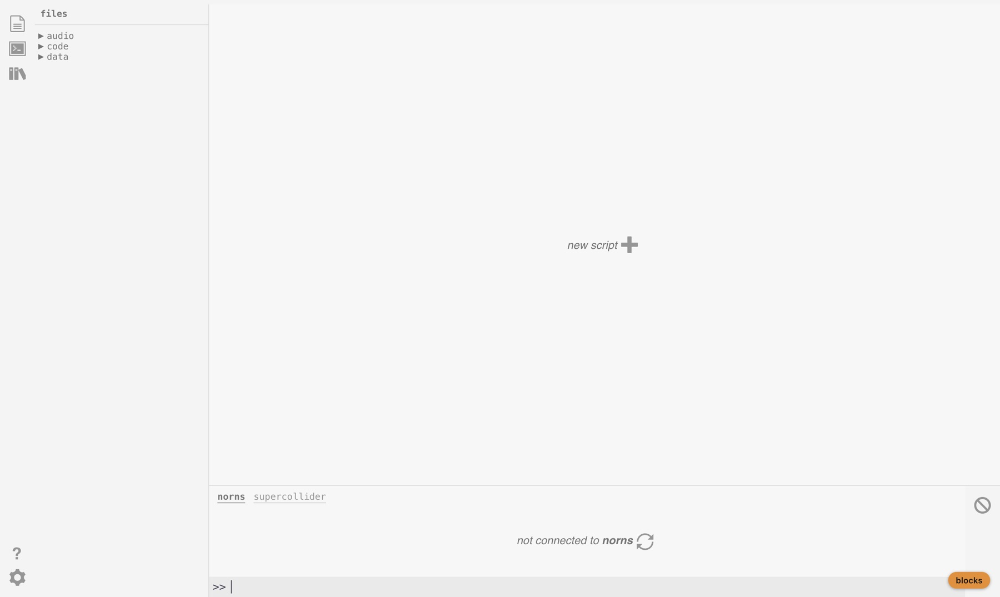
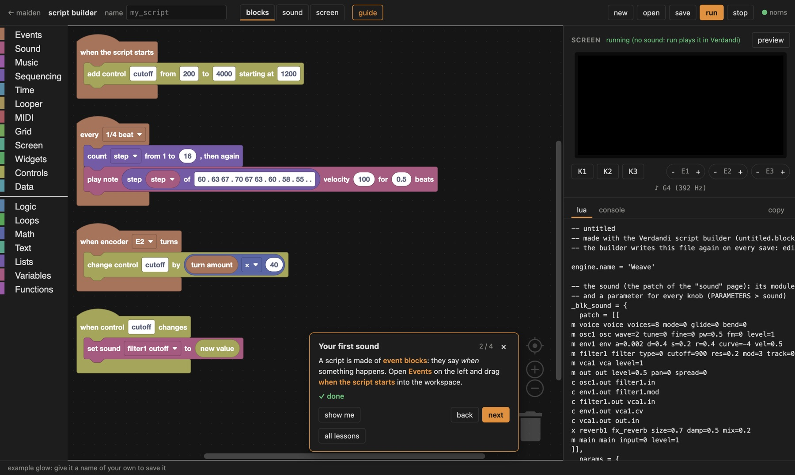
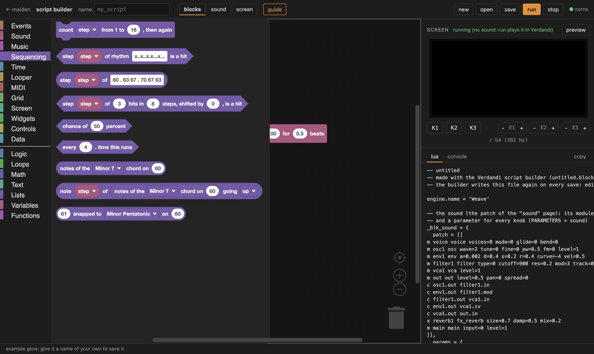
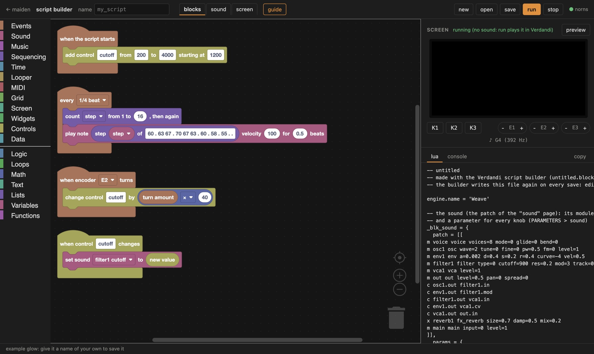
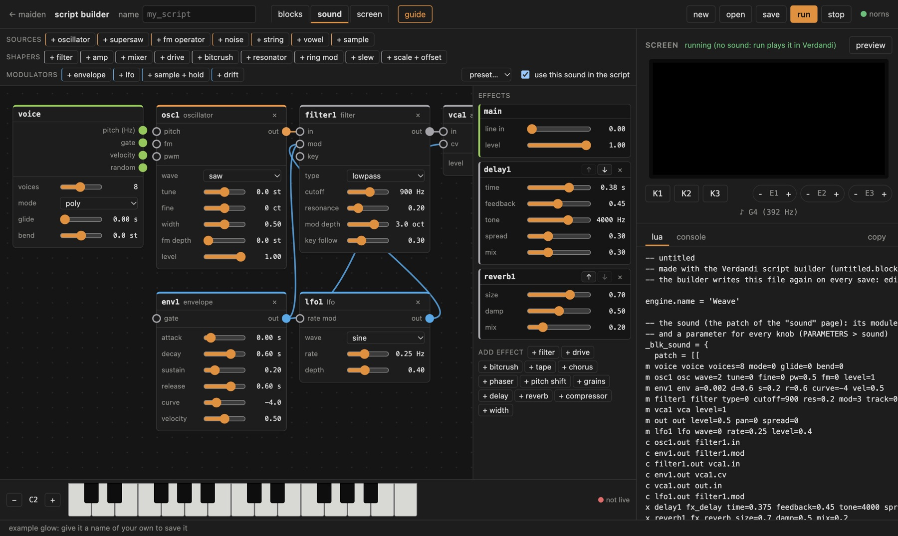
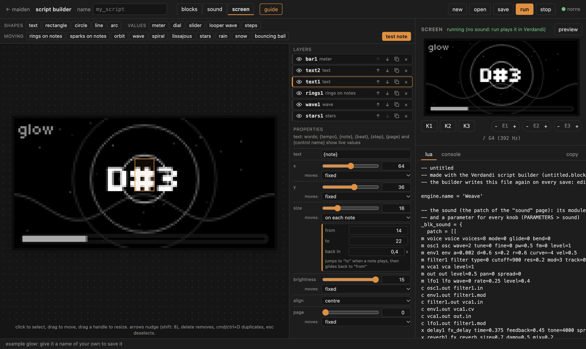
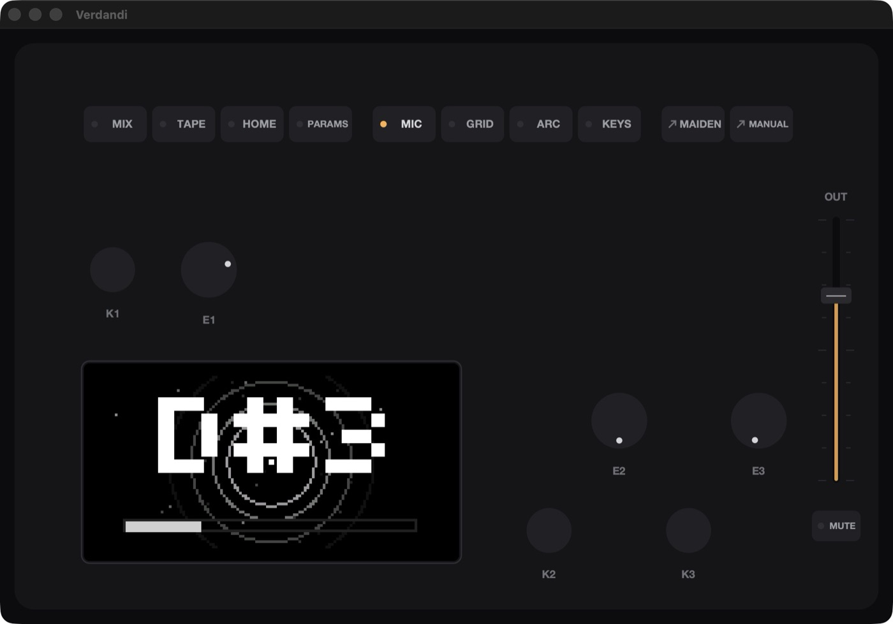

make norns scripts without writing Lua: what happens, how it sounds, how it looks. part of Verdandi (norns on the Mac). not affiliated with monome. free software under the GPL-3.0.
The script builder makes ordinary norns scripts from three pages. You switch between them at the top:
What you build is a real norns script: code/<name>/<name>.lua in maiden, with your blocks next to it
(<name>.blocks.json), so you can open it in the builder again. The lua tab on the right always shows
the script your blocks make, line by line.
The builder runs on your Mac only: maiden listens on 127.0.0.1, nobody else can see your scripts until you
share them.
http://127.0.0.1:5000/maiden in a browser.http://127.0.0.1:5000/maiden/blocks/
(bookmark it), with the example first_steps.
The page has the blocks (or the sound, or the screen) on the left and, on the right, a preview of the norns
screen with K1 to K3 and E1 to E3 you can click (scroll over an encoder to turn it), the lua the blocks make and the
console of norns. The preview runs your script in the page, silently: you see notes as ♪ C3 under
the screen. run plays it in Verdandi, with sound.
guide at the top opens lessons in small steps: your first sound, a melody, the sound page, an encoder, drawing, the screen page, a looper, a grid, saving. Each step says where its blocks are (show me opens the right group of the toolbox) and notices by itself when you have done it.

This tutorial builds glow: a melody, a sound with a moving filter and an echo, a screen that glows with every note, and the encoder E2 on the filter. open > glow loads the finished one. To build it yourself, press new.
The toolbox on the left holds the blocks by group. Click a group, drag a block into the workspace. A block with a notch at the top snaps under another one; a round slot takes a value (a number, a note, a block that gives a value). Event blocks, with a rounded top, start a stack: everything inside them runs when their event happens.

step goes up by one, back to 1 after 16.
A block that is in the wrong place gets a yellow warning (for example turn amount outside when encoder … turns). A block outside every event block is greyed out: it never runs. Hover over a block for what it does.
Click sound at the top. This page is the instrument your notes play. Every note gets a voice of its own: the voice module gives each one its pitch, its gate (held or not) and its velocity; whatever reaches output is heard, through the effects on the right. Up to 16 voices play at once; mode mono or legato plays one at a time, with glide.

Every knob is also a control: PARAMETERS > sound on the norns, mappable to MIDI, and in the blocks set sound … to, change sound … by and sound … reach it. While the script runs in Verdandi, the knobs and the keyboard at the bottom play live; changing a cable starts the script again by itself.
Click screen at the top. The big screen shows exactly what the norns will show, live. Add elements with the buttons at the top; click one to select it, drag it to move it, drag its corners to resize it, arrow keys move it a pixel (shift: 8). The layer list on the right puts one over another; its eye hides one.
{note}: the name of the note just played. In the properties, set size to move
on each note, from 14 to 22: the name jumps with every note and shrinks back.cutoff. Turn E2: the bar follows.
Any number of an element can be fixed or move: with the beat (smooth, triangle, saw, square, random steps;
every so many beats), over time (the same in seconds), on each note, with the sound level, with a
control, or with a looper's playhead. Text shows live values in braces: {note}, {tempo},
{beat}, {page}, {step} (any variable of the blocks) and {cutoff} (any control).
Blocks under Screen change pages, hide and show elements and set their values; draw on top of the design with
draw the screen.
glow (letters, numbers, _).cutoff): the filter and the meter follow.
The dot next to norns at the top right is green when the builder reaches Verdandi. Red: start Verdandi (or restart it), the builder connects again by itself.
code/<name>/<name>.lua and <name>.blocks.json through
maiden. run (⌘↩) saves first. maiden shows them under code; on the norns they are in
SELECT like any script..lua is written again on every save: change the blocks, not the text. To go on in Lua, copy it to a
folder of its own and edit it in maiden.A script from the builder runs on any norns. Copy its folder code/<name> to the norns like any script
(maiden on the norns, or SMB/SFTP to dust/code). A script with a sound needs the Weave engine on that norns, once:
copy Engine_Weave.sc and WeaveGraph.sc (in Verdandi: norns/sc/engines/) to
dust/code/weave/lib/ on the norns, then SYSTEM > RESTART. Verdandi has Weave built in.
| what | why, and what helps |
|---|---|
| no sound in the preview | the preview is silent on purpose; run plays it in Verdandi. |
| "norns is not reachable" | Verdandi is not running, or maiden is open as localhost: use 127.0.0.1. |
| "ran without pausing for too long" | a loop never waits: put wait in it, or use every …. |
| a block is greyed out | it is outside every event block: it never runs. |
| a yellow warning on a block | it is somewhere it cannot work (hover over the warning). |
| "sound … is not on the sound page any more" | its module was removed: pick another knob in the block. |
| "no control …" | add the control in when the script starts before using it. |
| a looper records nothing | it records the audio input: check SYSTEM > AUDIO and the microphone permission. |
every block of the toolbox, by group. ( ) is a slot for a value, […] a choice or a field.
Logic, loops, math, text, lists, variables and functions are Blockly's own.
| block | what it does |
|---|---|
| when the script starts | runs once when the script loads: set things up here |
| every [1/4 beat] | repeats in time with the norns clock (tempo in PARAMETERS > CLOCK) |
| when key [K2] is [pressed] | runs when a key of the norns is pressed or released |
| when encoder [E2] turns | runs on every step of an encoder; "turn amount" is +1 or -1 (more when turned fast) |
| turn amount | how far the encoder turned: positive clockwise, negative counter-clockwise |
| draw the screen | draws the 128 x 64 screen, 15 times a second; it is cleared before each drawing |
| block | what it does |
|---|---|
play note ( ) velocity ( ) for ( ) beats | a MIDI note number (60 is middle C), velocity 0 to 127; nothing plays when the note is empty (a rest) |
play frequency ( ) Hz velocity ( ) for ( ) beats | |
start note ( ) velocity ( ) | the note sounds until "stop note" with the same number: for keys held down |
stop note ( ) | |
| stop all notes | |
set sound […] to ( ) | any knob of the sound page; it is also in PARAMETERS > sound |
change sound […] by ( ) | adds to a knob, kept inside its range: "change sound filter1 cutoff by turn amount x 50" |
| sound […] | |
| play MIDI notes with the sound | notes from the MIDI device in slot 1 play the sound, with their velocity |
load sound file [my_sound.wav] into sample slot ( ) | a file in dust/audio (or a full path) for the sample module of the sound page |
| voices sounding | how many notes sound right now (held or ringing out) |
| block | what it does |
|---|---|
note ( ) of scale [Major] from ( ) | step 1 is the root note; higher steps climb the scale through the octaves |
name of note ( ) | for example 60 gives C4 |
sequence of ( ) | a sequins: store it in a variable, then take "next from" it |
| next from [melody] | the next value of a sequence; after the last one it starts over |
| block | what it does |
|---|---|
count [step] from 1 to ( ), then again | adds 1 each time, back to 1 after the last: the step of a sequence |
step ( ) of rhythm [x..x..x.x...x...] is a hit | x (or any letter) is a hit, a dot a rest; after the last step it starts over |
step ( ) of [60 . 63 67 . 70 67 63] | numbers with spaces between them; a dot is a rest: "play note" plays nothing then |
step ( ) of ( ) hits in ( ) steps, shifted by ( ), is a hit | a euclidean rhythm: the hits as evenly spread as they can be (3 in 8 is the tresillo) |
chance of ( ) percent | true that often, at random: 50 is a coin toss |
every ( ). time this runs | true the first time, then every n-th time |
notes of the [Major] chord on ( ) | a list of note numbers, the root first |
note ( ) of ( ) going [up] | an arpeggio: step 1, 2, 3 ... walks through the notes |
( ) snapped to [Major] on ( ) | the nearest note of the scale: any number becomes a note that fits |
| block | what it does |
|---|---|
wait ( ) beats | only inside "every ..." blocks |
set tempo to ( ) BPM | |
| tempo (BPM) |
| block | what it does |
|---|---|
| set up looper [1] for loops up to [30] seconds, recording [the audio input] | a looper on a softcut voice; set it up in "when the script starts" |
| looper [1]: [record a new loop] | record, then finish: the time in between is the loop. overdub records on top while it plays |
looper [1] [speed (1 normal, -1 backwards)] ( ) | speed 2 is an octave up, 0.5 an octave down, -1 backwards. a length in beats makes every recording that long |
looper [1] jump to ( ) (0 start, 1 end) | |
| load sound file [my_loop.wav] into looper [1] | a file in dust/audio (or a full path); it plays at once, as long as the looper allows |
| position of looper [1] (0 to 1) | |
| length of looper [1] (seconds) | |
| looper [1] is [recording] | |
waveform of looper [1] at x ( ) y ( ) width ( ) height ( ) | the loop as a picture, with the playhead |
| block | what it does |
|---|---|
| when a MIDI note [starts] arrives | notes from the MIDI device in slot 1 (SYSTEM > DEVICES > MIDI) |
| MIDI note number | |
| MIDI velocity | |
send MIDI note ( ) velocity ( ) for ( ) beats on channel ( ) | to the MIDI device in slot 1; the note ends by itself |
| when MIDI CC [1] changes | a knob of a MIDI controller (device slot 1); "CC value" is 0 to 127 |
| CC value | |
send MIDI CC ( ) value ( ) on channel ( ) |
| block | what it does |
|---|---|
| when a grid key is [pressed] | "grid x" (1 to 16, left to right) and "grid y" (1 to 8, top down) say which |
| grid x | |
| grid y | |
grid key x ( ) y ( ) is held | |
| draw the grid | 30 times a second, all lights off first: light what should be lit |
light grid x ( ) y ( ) brightness ( ) | brightness 0 (off) to 15 |
| when arc ring [1] turns | "arc turn amount" says how far, positive clockwise |
| arc turn amount | |
| draw the arc | |
light arc ring [1] light ( ) brightness ( ) | 64 lights per ring, 1 at the top |
light arc ring [1] from ( ) to ( ) (0 to 1) brightness ( ) | a stretch of the ring: from 0 to the value of a control draws a meter |
| block | what it does |
|---|---|
write ( ) at x ( ) y ( ) brightness ( ) [from the left] | x 0 to 127, y 0 to 63 (y is the bottom of the letters), brightness 0 to 15 |
[filled] rectangle at x ( ) y ( ) width ( ) height ( ) brightness ( ) | |
[filled] circle at x ( ) y ( ) radius ( ) brightness ( ) | |
line from x ( ) y ( ) to x ( ) y ( ) brightness ( ) | |
pixel at x ( ) y ( ) brightness ( ) | |
text size ( ) | for the "write" blocks after it; 8 is the norns size |
| frame number | counts up with every drawing (15 a second): use it to move things |
| beats since start | the clock position in beats: animations that move with the tempo |
show page ( ) of the screen design | elements on page 0 always show; the others only on their page |
| screen design page | |
set screen element […] […] to ( ) | the script decides this value now (it stops moving by itself) |
| let screen element […] […] move by itself again | |
| [show] screen element […] | |
| set off the note animations | what moves "on each note" moves now, as if a note played |
| block | what it does |
|---|---|
dial for control [cutoff] at x ( ) y ( ) size ( ) | the norns dial, with the control's name and value |
[upright] slider for control [cutoff] at x ( ) y ( ) width ( ) height ( ) | |
play symbol at x ( ) y ( ) size ( ) showing ( ) | a play triangle when the value is true, a stop square when it is false |
page dots: page ( ) of ( ) | the dots on the right that show which page is on (keep the page in a variable, change it with E1) |
tabs [play, sound, loop] showing tab ( ) | tab names with commas between them, across the top |
list [one, two, three, four] at x ( ) y ( ) with item ( ) picked | a scrolling list, the picked item bright |
| block | what it does |
|---|---|
| add control [cutoff] from [0] to [100] starting at [50] | a parameter in the PARAMETERS menu; it can be mapped to MIDI and saved in PSETs. add controls in "when the script starts" |
| control [cutoff] | |
set control [cutoff] to ( ) | |
change control [cutoff] by ( ) | adds to a control, kept inside its range: "change control cutoff by turn amount" |
| add choice [mode] with [up, down, random] starting at [1] | a control that picks one of these (commas between them); "control mode" is its number, 1 for the first |
| add switch [hold] starting [off] | on (1) or off (0); MIDI mappable |
| shown value of control [mode] | what PARAMETERS shows: the name of a choice, a value with its unit |
| when control [cutoff] changes | from an encoder, MIDI, an LFO or a block: "new value" is what it is now |
| new value | |
LFO moves control [cutoff] from ( ) to ( ) every ( ) beats, [smoothly] | any control, sound knobs too (control "filter1 cutoff"); in time with the clock |
| block | what it does |
|---|---|
remember ( ) as [pattern] | kept in the script's data folder: still there the next time the script runs |
remembered [pattern], else ( ) |
every module of the sound page; its knobs are its params. option params are choices.
| module | what it does | in / out | knobs |
|---|---|---|---|
| voice | what each played note gives the patch: its pitch, its gate (held or not), its velocity and a random number of its own | – / pitch (Hz), gate, velocity, random | voices, mode (poly, mono, legato), glide, bend |
| output | where the sound of a voice leaves the patch, into the effects | in, pan / – | level, pan, spread |
| module | what it does | in / out | knobs |
|---|---|---|---|
| oscillator | sine, triangle, saw or square; fm bends its pitch by the fm input | pitch, fm, pwm / out | wave (sine, triangle, saw, square), tune, fine, width, fm depth, level |
| supersaw | seven detuned saws: big leads and pads | pitch / out | tune, detune, level |
| fm operator | a sine at a ratio of the pitch; another operator into pm makes bells and keys | pitch, pm / out | ratio, fine, pm depth, level |
| noise | white, pink or brown noise | – / out | color (white, pink, brown), level |
| string | a plucked string (Karplus-Strong), struck by the gate | pitch, strike / out | decay, damp, level |
| vowel | a voice-like tone that sings a, e, i, o, u (in between too) | pitch, vowel / out | vowel, level |
| sample | plays a sound file loaded into a slot (the "load sample" block), at the pitch of the note | pitch, start / out | slot, start, end, loop (off, on), follow pitch, level |
| module | what it does | in / out | knobs |
|---|---|---|---|
| filter | lowpass, highpass, bandpass or notch; mod moves the cutoff in octaves | in, mod, key / out | type (lowpass, highpass, bandpass, notch), cutoff, resonance, mod depth, key follow |
| amp | the in signal, as loud as the cv input says (an envelope, usually) | in, cv / out | level |
| mixer | four inputs into one | in 1, in 2, in 3, in 4 / out | level 1, level 2, level 3, level 4 |
| drive | soft saturation, wavefolding or hard clipping | in, mod / out | type (saturate, fold, clip), amount, level |
| bitcrush | fewer bits and a lower sample rate: lo-fi | in / out | bits, rate |
| resonator | a tuned comb: rings the in signal at the note's pitch (try noise in) | in, pitch / out | tune, decay, level |
| ring mod | a times b | a, b / out | |
| slew | smooths changes: steps become glides | in / out | time |
| scale + offset | in times amount, plus offset: turn a modulation up, down or upside down | in / out | amount, offset |
| module | what it does | in / out | knobs |
|---|---|---|---|
| envelope | attack, decay, sustain, release while the gate is held; 0 to 1 | gate / out | attack, decay, sustain, release, curve, velocity |
| lfo | a slow wave, -1 to 1, started with each note | rate mod / out | wave (sine, triangle, saw, square, random), rate, depth |
| sample + hold | holds a new random value (or the in signal) at each tick: random steps | in / out | rate |
| drift | wanders slowly and smoothly, -1 to 1: life for pads and tuning | – / out | rate, depth |
| effect | what it does | knobs |
|---|---|---|
| main | the line input into the effects, and the level of everything | line in, level |
| filter | a filter over everything | type (lowpass, highpass), cutoff, resonance |
| drive | saturation over everything | amount, mix |
| bitcrush | lo-fi over everything | bits, rate, mix |
| tape | wow, flutter and tape saturation | wow, flutter, saturation |
| chorus | a slowly moving copy next to the sound | rate, depth, mix |
| phaser | sweeping notches | rate, depth, mix |
| pitch shift | a copy shifted up or down (octaves, fifths) | shift, mix |
| grains | scatters the sound into a cloud of small grains | density, size, mix |
| delay | echoes; spread puts the right side later | time, feedback, tone, spread, mix |
| reverb | a room to a hall | size, damp, mix |
| compressor | evens out the level: punch, or glue | threshold, ratio, makeup |
| width | narrower (0) or wider (2) stereo | width |
| element | what it draws | properties |
|---|---|---|
| text (shapes) | words; {tempo}, {note}, {beat}, {step}, {page} and {control name} show live values | text, x, y, size, brightness, align (left, centre, right), page |
| rectangle (shapes) | a box, filled or outlined | x, y, width, height, brightness, drawn (filled, outlined), page |
| circle (shapes) | a circle, filled or outlined | x, y, radius, brightness, drawn (filled, outlined), page |
| line (shapes) | a line from one point to another | from x, from y, to x, to y, thickness, brightness, page |
| arc (shapes) | part of a ring: from 0 (the top) round to 1 | x, y, radius, from, to, thickness, brightness, page |
| meter (values) | a bar filled as far as its value (0 to 1): give it a control, the sound level or the beat | x, y, width, height, value, brightness, direction (across, up), page |
| dial (values) | the norns dial of a control, with its name and value | control, x, y, size, page |
| slider (values) | the norns slider of a control | control, x, y, width, height, direction (up, across), page |
| looper wave (values) | the loop of a looper (set up in the blocks), with its playhead | looper, x, y, width, height, page |
| steps (values) | a row of steps, the current one bright: the counter of a sequence (a variable of the blocks) | step variable, steps, x, y, width, height, brightness, page |
| rings on notes (moving) | every note sends a ring out from the centre, fading as it grows | x, y, reach, lasts, brightness, page |
| sparks on notes (moving) | every note throws sparks that fall and fade | x, y, spread, sparks, gravity, brightness, page |
| orbit (moving) | dots going round, once every so many beats | x, y, radius, dots, round in, dot size, brightness, page |
| wave (moving) | a sine line across the screen, flowing with the beat | y, height, waves, flows in, brightness, page |
| spiral (moving) | a turning spiral | x, y, size, turns, turns in, brightness, page |
| lissajous (moving) | the figure two waves draw together, slowly turning | x, y, width, height, across, up, turns in, brightness, page |
| stars (moving) | flying through stars | stars, speed, brightness, page |
| rain (moving) | falling drops | drops, speed, length, brightness, page |
| snow (moving) | flickering pixels, like an old screen | x, y, width, height, density, brightness, page |
| bouncing ball (moving) | a ball bouncing off the edges | size, speed, brightness, page |
| moves | how | settings |
|---|---|---|
| with the beat | goes from "from" to "to" and back, in time with the clock | from, to, every, shape (sine, triangle, saw, square, random) |
| over time | the same, in seconds, whatever the tempo | from, to, every, shape (sine, triangle, saw, square, random) |
| on each note | jumps to "to" when a note plays, then glides back to "from" | from, to, back in |
| with the sound level | "from" when silent, "to" when loud | from, to |
| with a control | "from" at the control's lowest, "to" at its highest | from, to, control |
| with a looper's playhead | "from" at the start of the loop, "to" at its end | from, to, looper |